This document submits the Customer Management module of ShopSphere, a multi-vendor e-commerce website, with its code repository, hosted link, requirement checklist and user guide.
| Item | Details |
|---|---|
| Candidate | Anil Nayak |
| Internship | ITVedant / Vibgyor Advisors integrated internship |
| Project | ShopSphere — multi-vendor e-commerce platform |
| Module | Customer Management (Admin console) |
| Frontend | React 19, Vite, React Router, Bootstrap 5 |
| Backend | Java 17, Spring Boot 4, Spring Security (JWT), Spring Data JPA |
| Database | MySQL (database ecommerce_intern, table users) |
Repository: https://github.com/anilnayak9969-cmd/ShopSphere
The repository holds the complete project. Secret settings (database password, JWT secret, email and Razorpay keys, admin access code) are not committed; an example settings file shows what to fill in.
| Folder | Contents |
|---|---|
Backend/ecommerce | Spring Boot API. The module's code is AdminCustomerController, CustomerAdminService / CustomerAdminServiceImpl, the DTOs CustomerCreateRequest, CustomerUpdateRequest, CustomerResponse, CustomerDetailResponse and CustomerSummaryResponse, the User entity, and the customer queries in UserRepository and OrderRepository. Self-registration is in AuthController / AuthServiceImpl. Tests: CustomerAdminServiceImplTest, AuthServiceRegistrationTest. |
Frontend/ecommerce | React website. The admin screen is src/pages/admin/AdminCustomers.jsx; customers register at src/pages/auth/Register.jsx. API calls are in src/services/adminService.js. |
DataBase | queries.sql (section 9: Customer Management SQL) |
Docs/CustomerManagement | This document, its screenshots and the module README |
README.md | Setup steps, features and API reference |
Website: https://host-shop-sphere.vercel.app/
To try the module, sign in with the admin account below and open Admin console → Customers.
| Login | Value |
|---|---|
| Admin email | admin@shopsphere.com |
| Admin password | (shared separately with the evaluator) |
Every functionality in the assignment is implemented and was tested in the running application. Self-registration and account suspension already existed in ShopSphere; the items marked ADDED were built for this assignment.
| Requirement | How ShopSphere implements it | Status |
|---|---|---|
| 1. Add a new customer Customers register through the frontend, or admins add customers through the admin dashboard | Customers register at Register → Shop (name, email, mobile, password) and confirm a 6-digit email code. Admins click Add customer on the Customer management page ADDED and enter the name, email, mobile number and a first password; the account is verified and can sign in at once. | Implemented |
| 2. Customer dashboard All customers with name, email, phone number and order history | Admin → Customers ADDED: summary cards, every customer with name, email, phone, order history (number of orders, amount spent, last order date), join date and status; search by name, email or phone; All / Active / Inactive filter. View opens the customer's personal information, saved addresses and full order list. | Implemented |
| 3. Update customer details Contact information and account status | Edit ADDED changes the full name, email, mobile number and the Active/Inactive switch. Email stays unique; the customer is notified. | Implemented |
| 4. Delete / deactivate customer account Soft delete: mark inactive without removing data | Deactivate sets the Boolean active column to 0 after a warning. The customer is signed out and cannot sign in or order; their profile, addresses and orders are kept. Activate brings the account back. | Implemented |
| Database design Table users | All assignment columns exist; first_name and last_name were added as columns that MySQL generates from full_name ADDED. See Appendix A. | Implemented |
Customer Management keeps track of every shopper on ShopSphere: their personal information, their orders and the state of their account. Administrators use it to add customers, correct contact details, look up a customer's orders when helping them, and switch accounts off and on again.
With this module the admin can:
Who uses it: only users with the Admin role. Customers manage their own profile from My account.
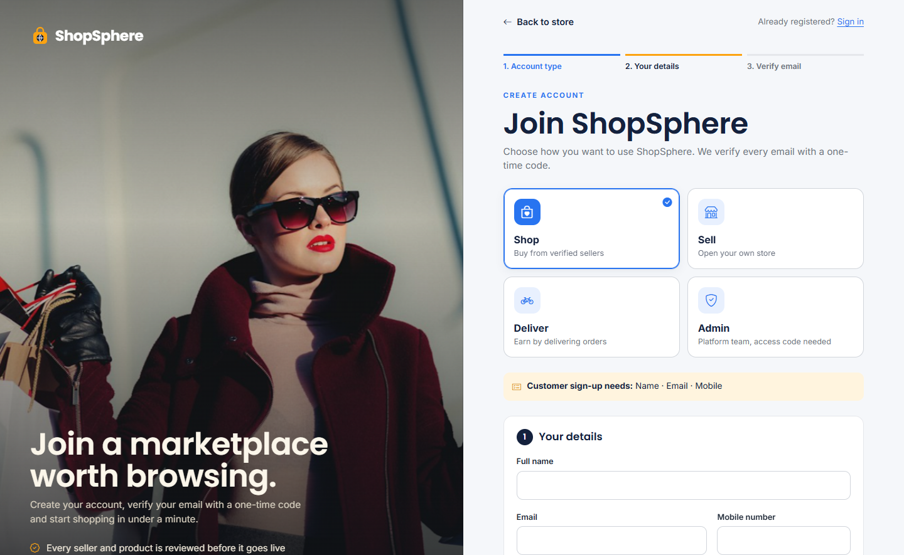
| Part of the page | What it shows |
|---|---|
| Add customer button | Opens the Add a customer form (section 4.3) |
| Total customers card | All customer accounts, and how many joined in the last 30 days |
| Active card | Customers who can sign in and shop |
| Inactive card | Deactivated customers (soft deleted, data kept) |
| With orders card | Customers who have placed at least one order |
| Search box | Name, email or phone number |
| All / Active / Inactive | Show only customers with that account status |
| Table: Customer | Full name and email |
| Table: Phone | Mobile number |
| Table: Order history | Number of orders, amount spent (cancelled and returned orders not counted) and the date of the last order |
| Table: Joined | When the account was created |
| Table: Status | Active or Inactive, plus "Email unverified" if the customer has not confirmed their email |
| View / Edit / Deactivate / Activate | Actions for each customer (sections 4.4 – 4.7) |
The list shows 10 customers per page, newest first.
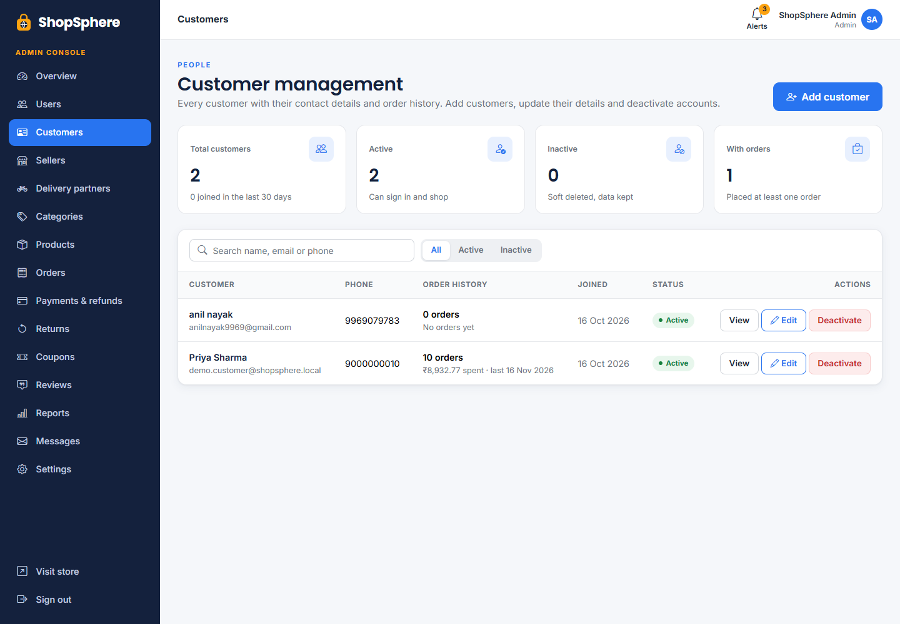
| Field | Required | What to enter |
|---|---|---|
| Full name (first and last name) | Yes | 2–100 characters: letters, spaces and . ' - , e.g. Rahul Mehta. ShopSphere splits it into first name and last name |
| Yes | A valid email, unique across all accounts (any capitalisation) | |
| Mobile number | Yes | 10 digits starting with 6–9 |
| First password | Yes | 8–64 characters with an uppercase letter, a lowercase letter and a number. Share it privately; the customer changes it from My account |
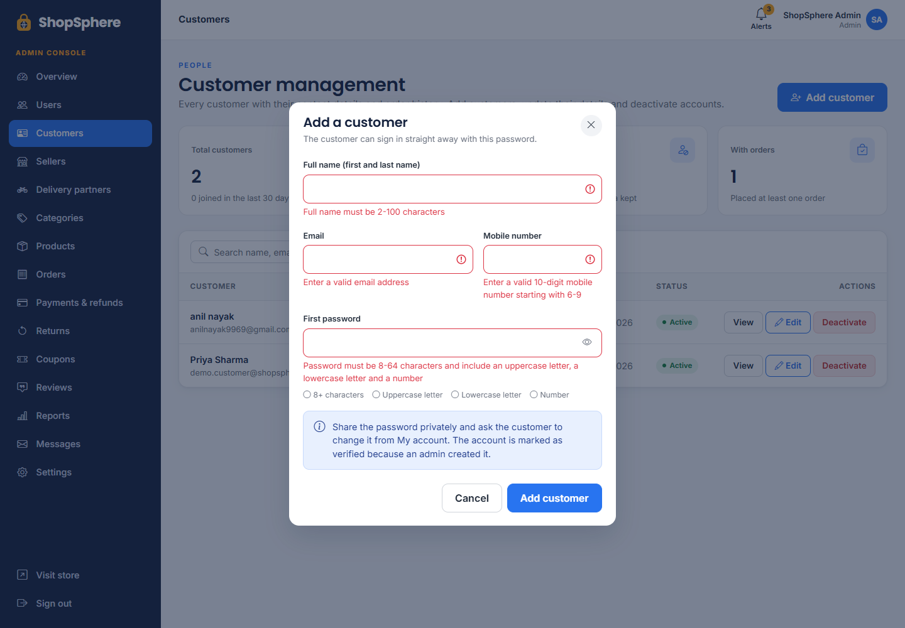
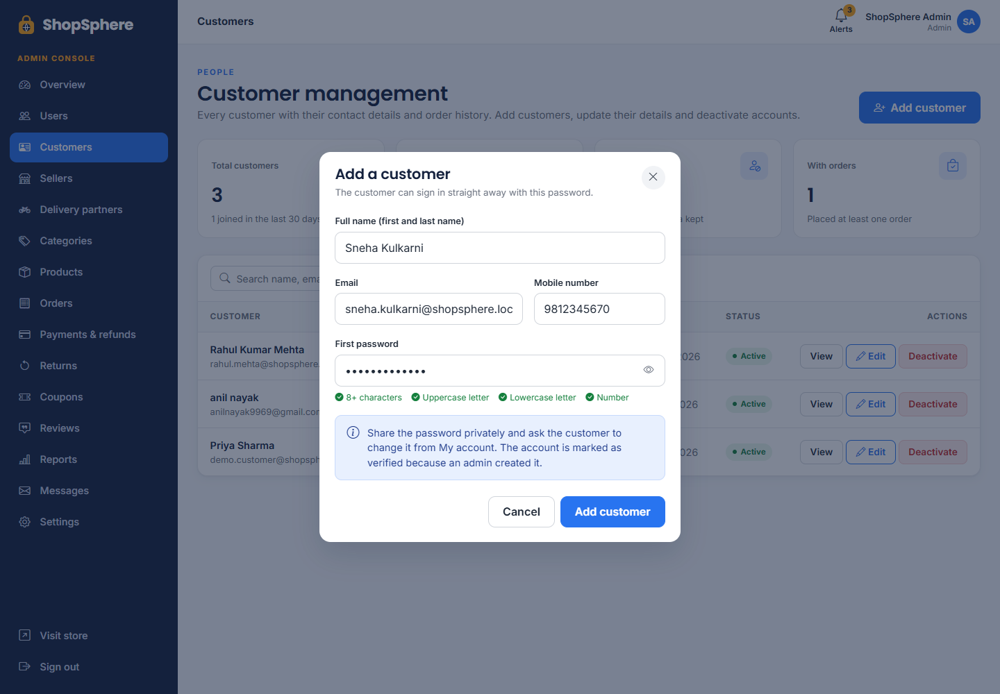
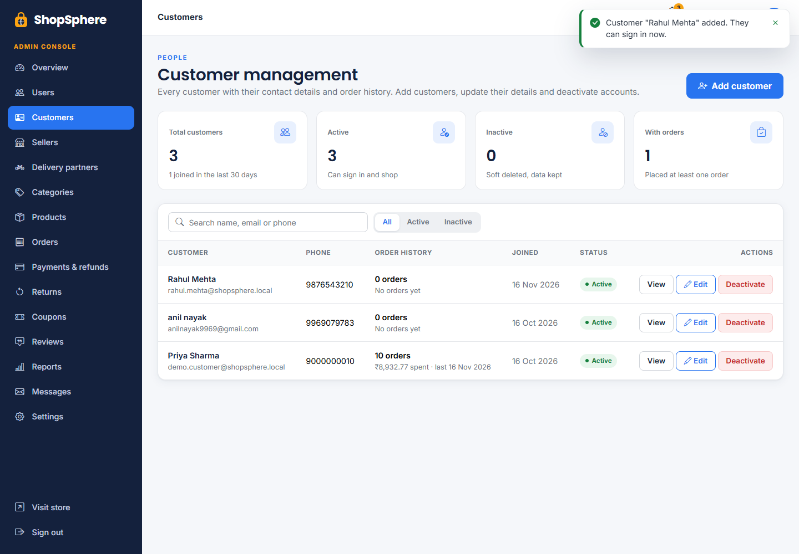
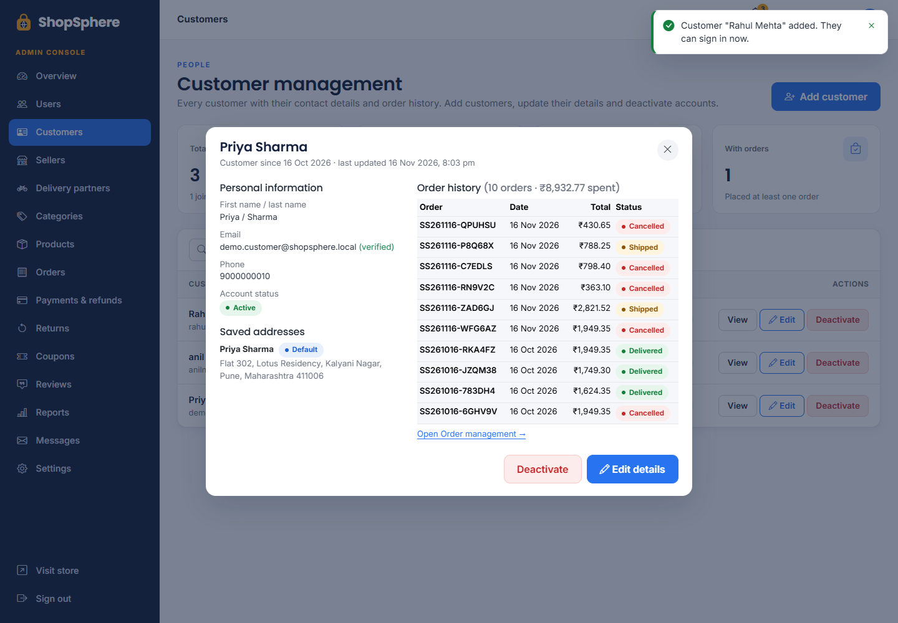
The customer's orders keep the name and address they were placed with; the new details are used from now on.
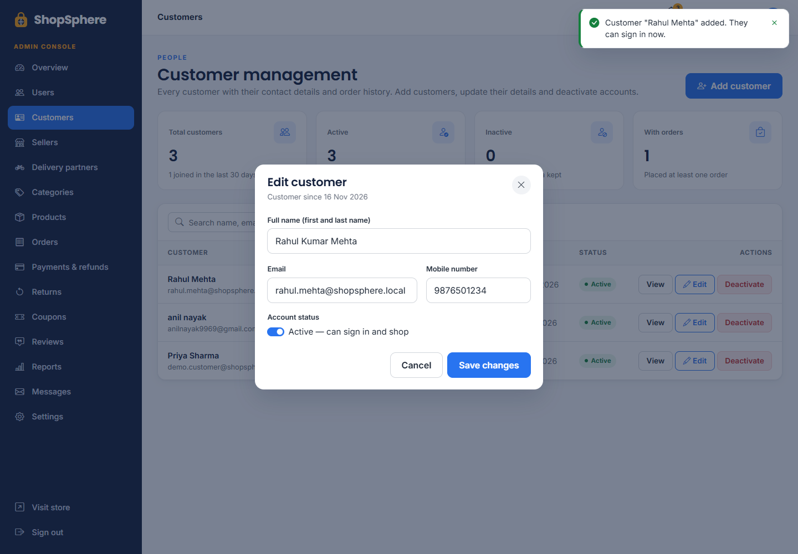
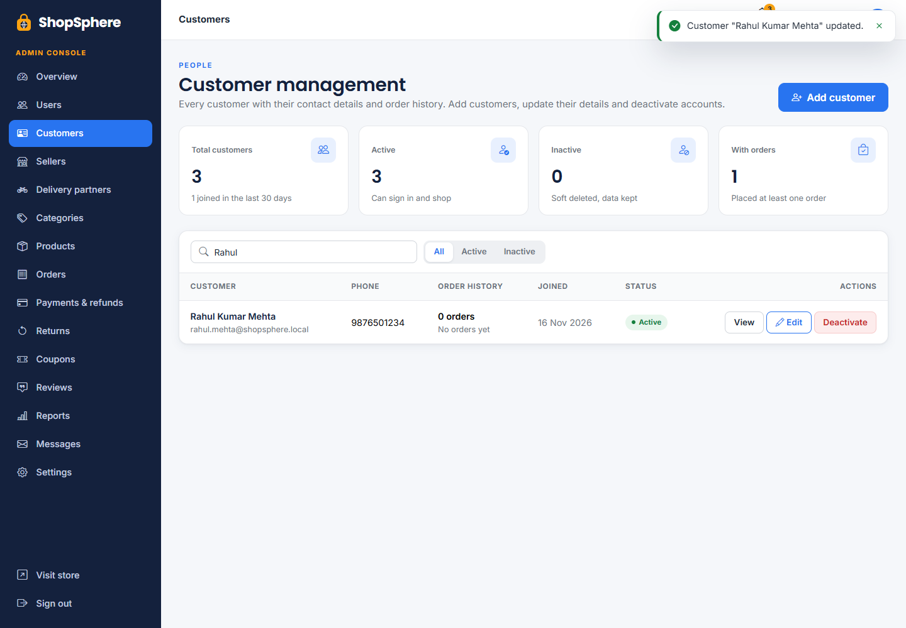
Deactivating is a soft delete: the Boolean status column (active) is set to false. The customer is signed out and cannot sign in or place orders, but their profile, addresses, reviews and orders stay in the database, so order history and reports remain correct and the account can be brought back.
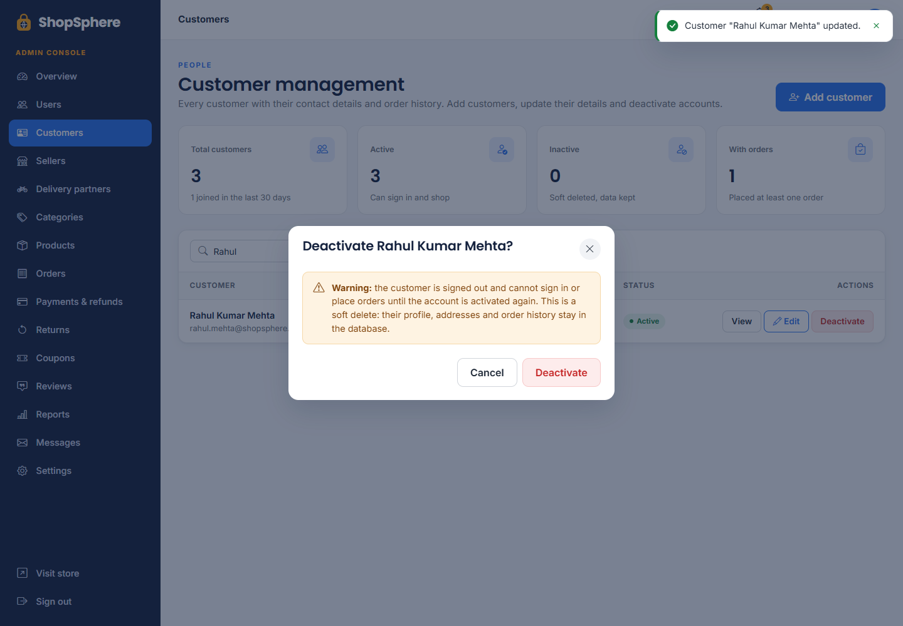
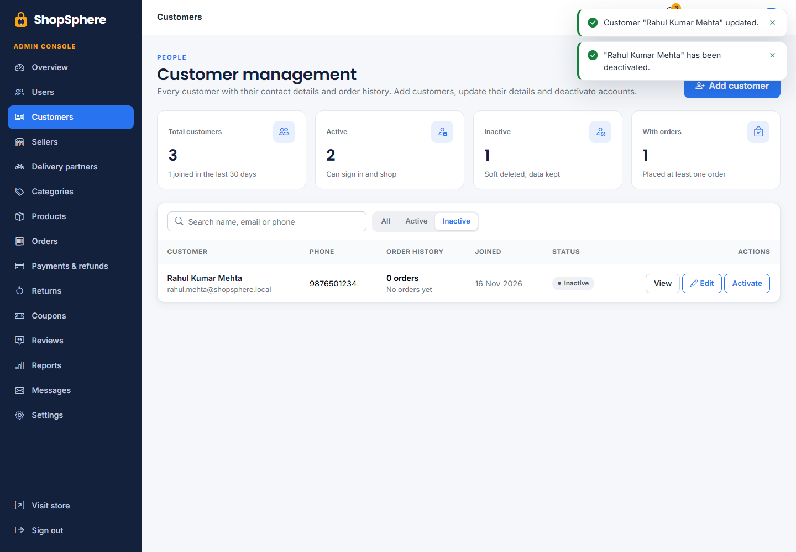
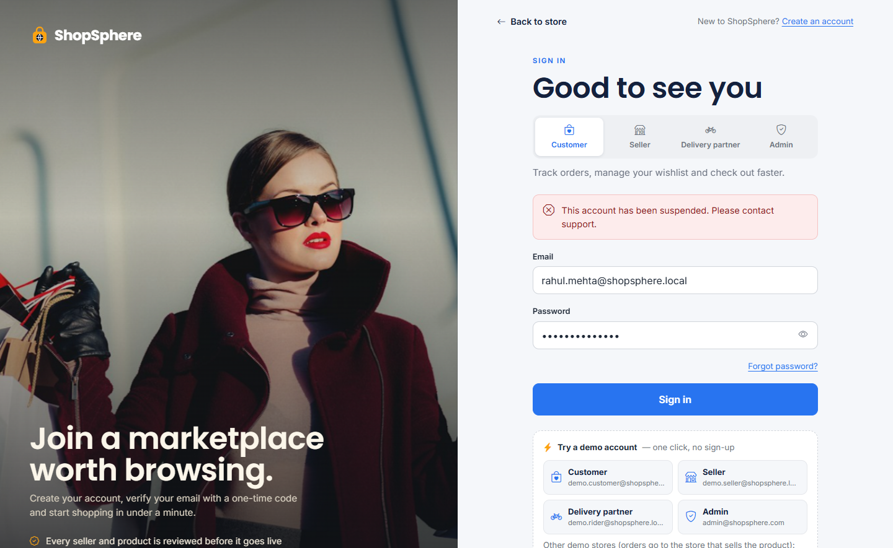
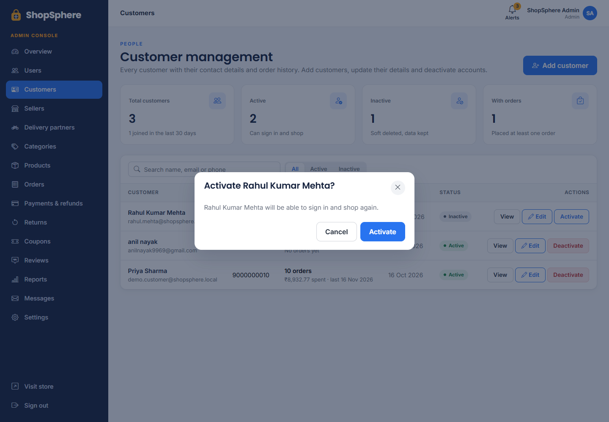
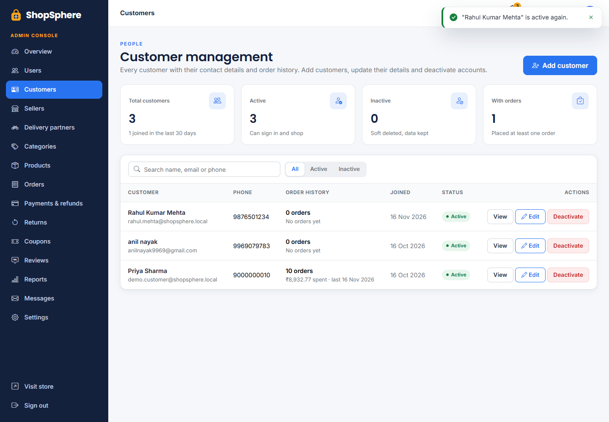
| Situation | Message shown | What to do |
|---|---|---|
| Name shorter than 2 or with numbers/symbols | Full name must be 2-100 characters / Use letters, spaces and . ' - only | Correct the name |
| Email not valid | Enter a valid email address | Correct the email |
| Email already used by another account | An account with this email already exists. / Another account already uses this email. | Use a different email, or find the existing account |
| Mobile number not 10 digits starting 6–9 | Enter a valid 10-digit mobile number starting with 6-9 | Correct the number |
| Weak first password | Password must be 8-64 characters and include an uppercase letter, a lowercase letter and a number | Choose a stronger password |
| Inactive customer signs in | This account has been suspended. Please contact support. | Admin activates the account if appropriate |
| A seller or admin account is opened through the customer API | Customer … was not found. | Manage sellers in Sellers and other accounts in Users |
| A customer or seller calls an admin customer API | HTTP 403 — You do not have permission to access this resource | Only admins manage customers |
Why can't I delete a customer permanently? Their orders, payments, refunds and reviews point to the account. Deactivating stops them signing in while keeping that history correct.
What happens to a deactivated customer's orders? They stay as they are; admins can still see and manage them in Order management.
Does a customer added by an admin need to verify their email? No. The admin vouches for the account, so it is marked verified and can sign in at once. Self-registered customers confirm a 6-digit email code.
How are first name and last name stored? ShopSphere stores the full name in full_name; MySQL works out first_name (the first word) and last_name (the rest) automatically, so they are always in step.
Why does "amount spent" differ from the sum of all orders? Cancelled, returned and refunded orders are not counted as money spent.
Can the customer change their own details? Yes, from My account: profile, password and saved addresses.
Figures 1–13 were taken from the complete application running locally: the React frontend on http://localhost:5173, the Spring Boot backend on http://localhost:8080 and the MySQL database ecommerce_intern. They follow one customer, Rahul Mehta, from being added by the admin (Figures 3–5), edited (Figures 7–8), deactivated and refused at sign-in (Figures 9–11), to being activated again (Figures 12–13). Passwords are hidden in every screenshot.
Customers are stored in the MySQL table users with role = 'CUSTOMER' (the same table holds sellers, delivery partners and admins). Orders link to the customer through orders.customer_id, and saved addresses through addresses.user_id.
| Assignment column | Assignment type | ShopSphere column and type | Meaning |
|---|---|---|---|
| user_id | int (pk, auto_increment) | user_id BIGINT, primary key, auto increment | Unique identifier for each customer |
| first_name | varchar(100) | first_name VARCHAR(100), generated from full_name | Customer's first name |
| last_name | varchar(100) | last_name VARCHAR(100), generated from full_name | Customer's last name |
| varchar(100) | email VARCHAR(150), unique (the form allows up to 100 characters) | Customer's email address, used to sign in | |
| phone | varchar(15) | phone VARCHAR(15) | Customer's phone number |
| created_at | datetime | created_at DATETIME(6) | When the account was created |
| updated_at | datetime | updated_at DATETIME(6) | When the customer's details were last updated |
| status | boolean | active BIT(1) | 1 = active customer, 0 = inactive (soft delete) |
Other columns: full_name (the name as entered), password (BCrypt hash, never the plain password), role, email_verified. The generated columns are created by SchemaPatcher:
ALTER TABLE users ADD COLUMN first_name VARCHAR(100)
GENERATED ALWAYS AS (SUBSTRING_INDEX(TRIM(full_name), ' ', 1)) VIRTUAL;
ALTER TABLE users ADD COLUMN last_name VARCHAR(100)
GENERATED ALWAYS AS (TRIM(SUBSTRING(TRIM(full_name),
CHAR_LENGTH(SUBSTRING_INDEX(TRIM(full_name), ' ', 1)) + 1))) VIRTUAL;
The full, tested set is in DataBase/queries.sql, section 9.
-- Add a new customer (the app stores only a BCrypt hash of the password) INSERT INTO users (full_name, email, phone, password, role, email_verified, active, created_at, updated_at) VALUES ('Rahul Mehta', 'rahul.mehta@shopsphere.local', '9876543210', '<bcrypt hash>', 'CUSTOMER', b'1', b'1', NOW(6), NOW(6)); -- Customer dashboard: name, email, phone, status and order history SELECT u.user_id, u.first_name, u.last_name, u.email, u.phone, IF(u.active, 'Active', 'Inactive') AS status, COUNT(o.order_id) AS orders, COALESCE(SUM(CASE WHEN o.status IN ('CANCELLED','RETURNED','REFUNDED') THEN 0 ELSE o.total_amount END), 0) AS total_spent, MAX(o.created_at) AS last_order_at FROM users u LEFT JOIN orders o ON o.customer_id = u.user_id AND o.status <> 'PENDING_PAYMENT' WHERE u.role = 'CUSTOMER' GROUP BY u.user_id ORDER BY u.created_at DESC LIMIT 10; -- Search and filter SELECT * FROM users WHERE role = 'CUSTOMER' AND active = b'1' AND (full_name LIKE '%rahul%' OR email LIKE '%rahul%' OR phone LIKE '%98765%'); -- Update contact details UPDATE users SET full_name = 'Rahul Kumar Mehta', phone = '9876501234', updated_at = NOW(6) WHERE user_id = 16 AND role = 'CUSTOMER'; -- Deactivate (soft delete) and reactivate UPDATE users SET active = b'0', updated_at = NOW(6) WHERE user_id = 16 AND role = 'CUSTOMER'; UPDATE users SET active = b'1', updated_at = NOW(6) WHERE user_id = 16 AND role = 'CUSTOMER';
User 16 is the demo customer Rahul Mehta in the local database used for the screenshots.
All admin endpoints need an admin's JWT (Authorization: Bearer <token>).
| Method | Path | Purpose |
|---|---|---|
| POST | /auth/register, /auth/verify-otp | Customer self-registration with an email code (public) |
| GET | /admin/customers?search=&active=&page=&size= | Customer dashboard. active=true|false filters by status |
| GET | /admin/customers/summary | Total, active, inactive, new in the last 30 days, with orders |
| GET | /admin/customers/{id} | Personal information, saved addresses and latest orders |
| POST | /admin/customers | Add a customer { fullName, email, phone, password } |
| PUT | /admin/customers/{id} | Update { fullName, email, phone, active } |
| PATCH | /admin/customers/{id}/status | Deactivate {"active": false} or activate {"active": true} |
Tests: CustomerAdminServiceImplTest checks that an admin-added customer is verified and active with a hashed password and a tidied name and email, that duplicate emails are refused when adding and when editing, that editing changes contact details and status, that deactivation never deletes the row, that seller accounts cannot be changed through the customer API, and that the order history totals are attached to each customer. AuthServiceRegistrationTest covers self-registration.